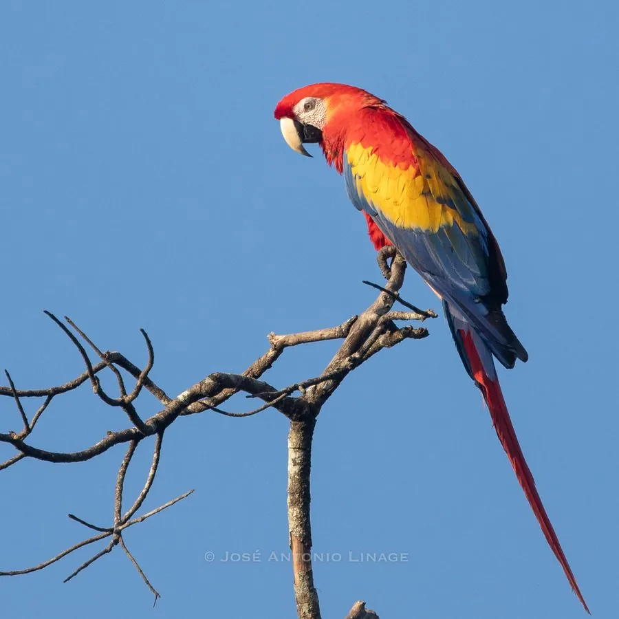

鸟类 · 动物界
绯红金刚鹦鹉 Ara macao

中美洲雨林中最艳丽的鹦鹉之一，鲜红羽衣衬着黄色和蓝色翼带，长尾可占总长一半，鸣声粗哑远扬。
- 分类
- 门脊索动物门纲鸟纲目鹦形目科鹦鹉科属金刚鹦鹉属
- 栖息环境
- 低地热带雨林、河岸林和稀树草原边缘，多在高大乔木的树冠层活动
- 地理分布
- 墨西哥南部经中美洲到巴西、玻利维亚等南美北部雨林，中国无分布
- 保护级别
- IUCN 无危（LC）；CITES 附录Ⅱ物种，中国无野生分布
物种志
绯红金刚鹦鹉体长 81–96 cm，体重 0.9–1.3 kg，其中长尾就占了将近一半。全身羽毛以鲜红色为主，翅膀中段有一道黄色带，翼端和部分覆羽呈蓝色，脸部裸露的皮肤为白色并带红色细纹，喙粗大而弯曲，上喙浅色、下喙黑色。
绯红金刚鹦鹉分布在墨西哥南部经中美洲到巴西、玻利维亚等地的低地热带雨林，喜欢在高大乔木的树冠层成对或家族群活动。它们以果实、种子、坚果和花蜜为食，还会成群飞到河岸的黏土崖上啃土，以补充矿物质并缓解某些果实中的毒素。繁殖期成对营巢于树洞，每窝产卵 1–3 枚，孵化约 28 天，育雏约 12 周。它们实行严格的一夫一妻制，野外寿命约 40 年，圈养个体可活到 70 岁以上。因盗猎和栖息地丧失，国际贸易受到《濒危野生动植物种国际贸易公约》附录Ⅱ管制。
形态与习性
- 食性果实、种子、坚果与花蜜，也会啃食泥土补充矿物质
- 体长81–96 cm，长尾约占一半
- 体重0.9–1.3 kg
- 繁殖每窝 1–3 枚卵，孵化约 28 天
- 寿命野外约 40 年，圈养可超过 70 年
- 鸣叫叫声粗哑刺耳，可传出数千米
趣味知识
- 绯红金刚鹦鹉的长尾超过体长的一半，是飞行时保持平衡的重要器官。
- 它们会成群到河岸的黏土崖上啃土，帮助排出果实中的毒素并补充矿物质。
- 金刚鹦鹉的喙力量惊人，可以咬开坚硬的坚果和棕榈果壳。
- 绯红金刚鹦鹉严格一夫一妻，常成对飞行，并互相梳理羽毛。